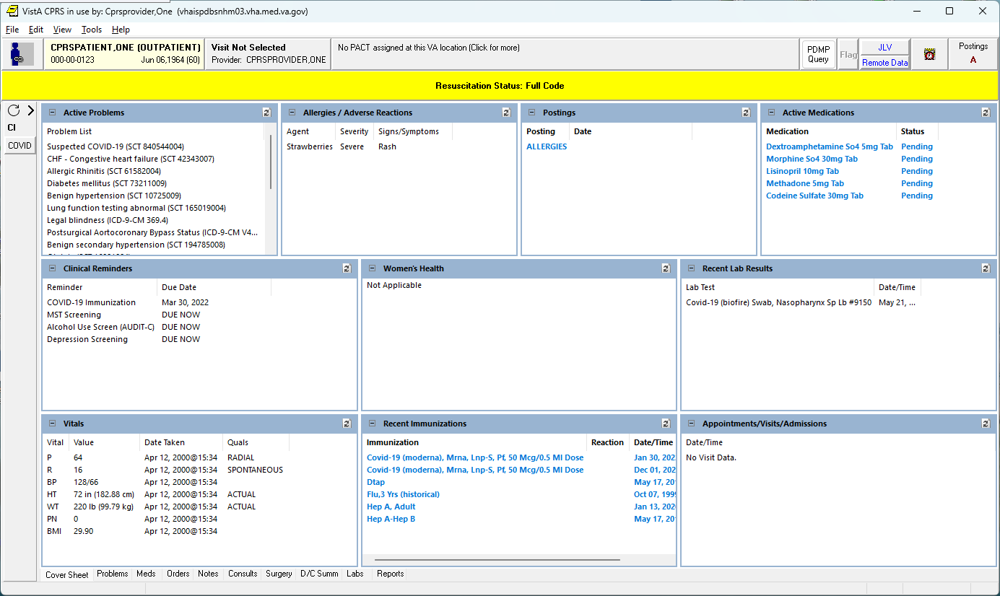
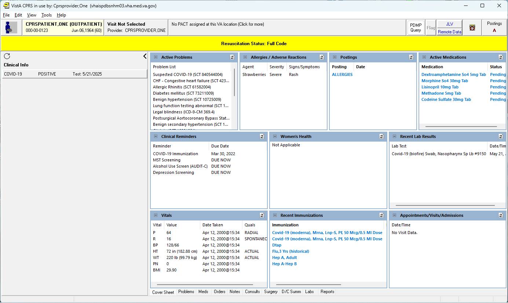
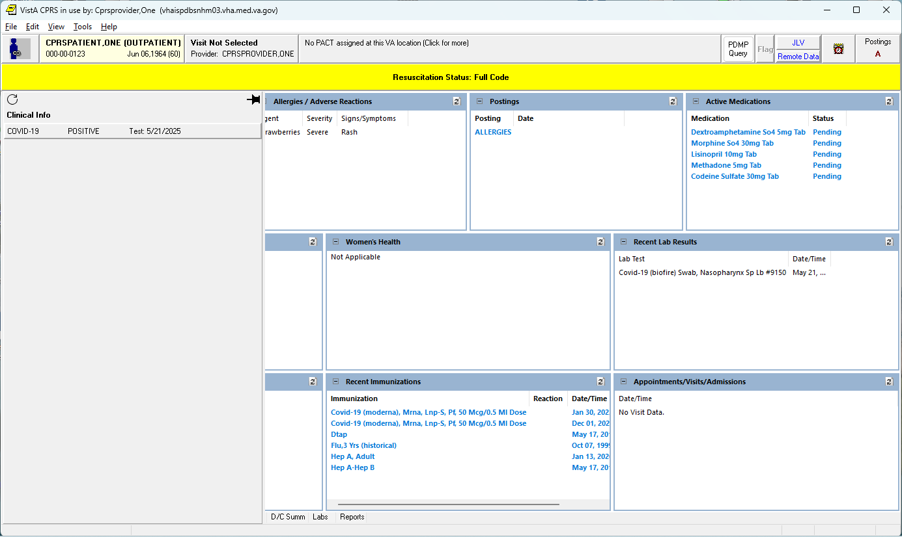
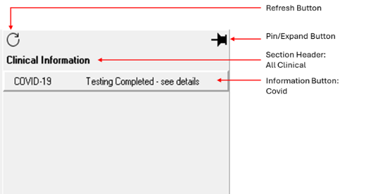
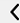
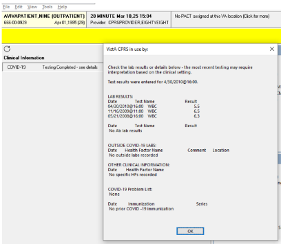
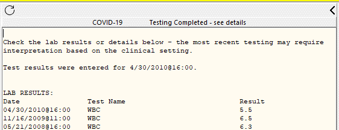
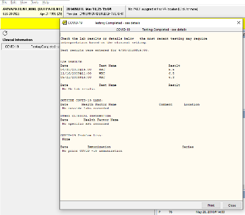

Collapses the Information Panel
Collapses the Information PanelThe CPRS Information Panel is a section of the GUI that lists information relevant to the patient and is made available throughout the patient chart. The CPRS Information Panel is composed of sections. Each section contains buttons. A section determines where the buttons under it appear in the Information Panel and in the patient chart in CPRS. There are two main sections: All Clinical and All Administrative. Both of these sections appear on every tab in CPRS. In addition to the All Clinical and All Administrative sections, each tab can have a section.
NOTE: If there are no visible buttons for a section, that section will not display in the panel.
All Clinical: This section contains buttons with relevant patient information intended for clinical staff.
All Administrative: This section contains buttons with relevant patient information intended for administrative staff (such as Clerks, HIMS, MAS).
Note: All Administrative is not available in the OR*3.0*508 release, but will be available in a future release.
Unique Tab Sections: These sections contain items that are relevant to the patient. Particular tasks should be placed here. For example, notes on when the next test is needed.
Note: Tabs created for each section only display on that section. For example, an Orders section will only display on the Orders tab.
The placement and content of these sections are determined at a national level.
National updates to Information Panels will be implemented through the VistA patch or the Clinical Reminder Content update processes.
The content, display orders, and display rules are determined by a national committee, and sites cannot locally modify the content in the National Information Panel. However, sites can modify some aspects of the look and feel of the National Information Panel.
The documentation references Show Editor or Show HTML Editor; however, at the time of the CPRS 33con release, these functionalities are still under development. Documentation will be updated as the editor changes.
Information Panel States
The Information Panel can be set by the user to one of 3 states; docked and collapsed, docked and expanded, and floating and expanded.



Information Panel Layout


, , or . Collapses the Information Panel
 Expands the Information Panel
Expands the Information Panel
 Pins the Information Panel
Pins the Information Panel
An Information Button is defined with logic to determine if it is applicable to the patient. If the Information Button is applicable to the patient, it is displayed to the user. If the Information Button does not apply to the patient, it is set to one of two states:
When an a Information Button is set to Show but Disabled, then the it can be defined to show a different abbreviation and/or a different display text then if the button applied to the patient.
An Information Button can be assigned to trigger specific actions when clicked by the user. Below is a list of possible actions:

If an Information Button has an action of Show Detail, Show Editor, Show HTML Editor, or Show URL, the action can be set to appear in CPRS in one of the following ways:

